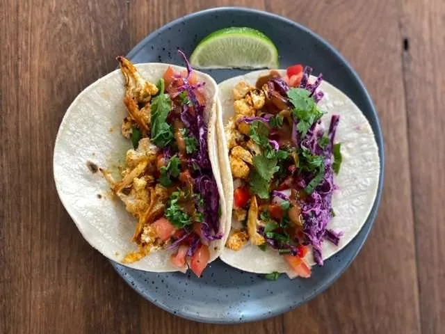
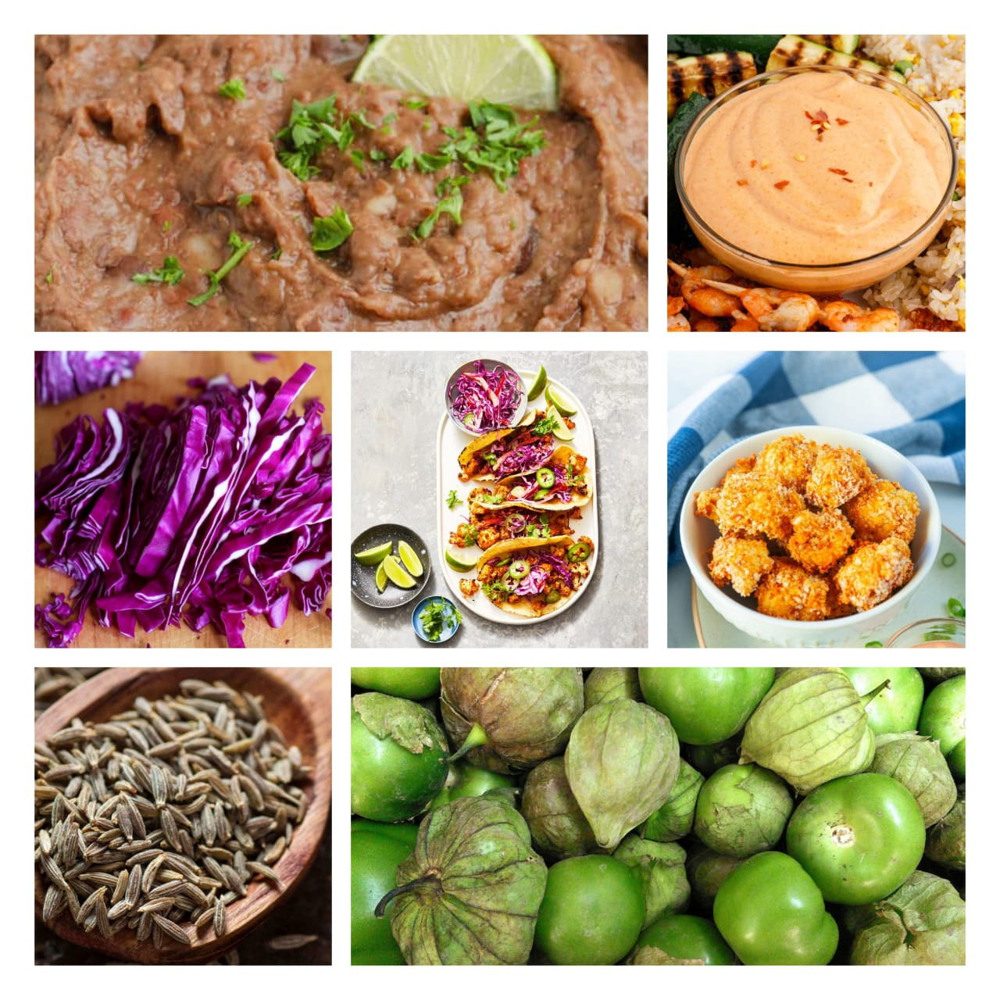

tacos
Home
These crispy cauliflower tacos are like a vegetarian fish taco, and they've become one of our most popular Mexican-style vegetarian recipes! The charred taco is filled with breaded cauliflower (baked, not fried), refried beans, and a silky sauce. They're all about one thing: big flavor!— even without the meat. Behold the taco. Canvas for all kinds of deliciousness, from traditional like barbacoa with tomatillo salsa to fusion like Korean beef or Thai tofu. Most of the time I eat a whole food plant based diet, so we're always looking for creative ways to use veggies. And the taco is the perfect canvas for creating some insane veggie flavors and textures! And this one is our new favorite: these Crispy Cauliflower Tacos.

Ingredients
1 recipe Crispy Breaded Cauliflower
15-ounce can vegetarian refried beans
½ teaspoon cumin
2 cups red cabbage, shredded
2 limes (1 for the cabbage & 1 to serve)
3 tablespoons Yum Yum Sauce
8 corn tortillas
Fresh cilantro, for garnish

Nutrition Facts
Calories 1280
Total Fat 65g
Cholesterol 15mg
Sodium 1990mg
Total Carbohydrate 143g
Vitamin C 0%
Vitamin A 0%
Procedure
Make the Crispy Breaded Cauliflower (about 40 minutes total; use the remaining time to complete the steps below.)
If using purchased refried beans, taste and if needed, mix with ½ teaspoon cumin and/or a pinch or two kosher salt.
Thinly slice the cabbage, enough for 2 cups. Mix it with 2 tablespoons lime juice and a pinch or two of salt. Allow it to stand at room temperature until serving.
Make the Yum Yum Sauce.Warm the tortillas, or char them by placing them on grates above an open gas flame on medium heat for a few seconds per side, flipping with tongs, until they are slightly blackened and warm.
Chop the cilantro for a garnish.To serve, place refried beans in a tortilla, top with cabbage, breaded cauliflower, Yum Yum sauce, and cilantro.
Serve with lime wedges to spritz prior to serving. (If you have leftover cauliflower, you can reheat them in a 350F oven for 10 minutes, flipping once.)
Expert Guide
Back ←
Scroll to Top ↑